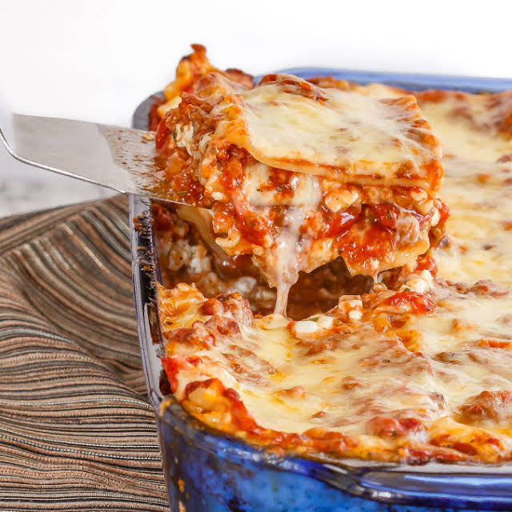

Lasagna

Warm Gooey Lasagna
Ingredients
- 1 lb. ground beef
- 3 cloves garlic (minced)
- 1 cup button mushrooms (chopped)
- 1 onion (medium, chopped)
- 1 Tbsp. dried basil
- 1 can diced tomatoes (796 mL, 26.9 fl oz)
- 2 cans tomato paste (156mL, 5.5 fl oz
- 9 lasagna noodles (Barilla, half of a 454g box)
- 3 cups cottage cheese
- 1 cup grated Parmesan cheese
- 2 Tbsp. dried parsley
- 2 large eggs (beaten)
- 1/2 tsp. black pepper
- 1 lb. mozzarella cheese
Instructions
- In a large saucepan, over medium heat, brow the ground beef.
Drain off the fat, and then add the garlic, mushrooms, onion and basil to
the pan.
- Cook, stirring, for 2-3 minutes until the onions are softend slightly.
- Add the tomatoes and tomato paste and stir to combine.
- Lower the heat simmer, uncovered for 30 minutes, stirring occasionally.
- In a large pot, buil the lasagna noodles until al dente, about 10 minutes
(I use whole wheat noodles, the time may be a bit less for white noodles)
and drain.
- In a large bowl, combine the cottage cheese, parmesean cheese, parsley,
pepper, and beaten eggs.
- In a 9x13 inch baking pan, lkayer the lasagna. Place half the noodles in
the pan and spread with half the cottage cheese mixture. Next spread one
third of the mozzarella cheese and then half the meat sauce. Repeat these
Layers and then top with the remaining third of the mozzarella cheese.
- Bake at 375 degrees F for 30 minutes, or until the cheese has started to
brown and the filling is hot and bubbleing.
- Let it stand for at least 10 minutes to set up before cutting into squares
and serving.